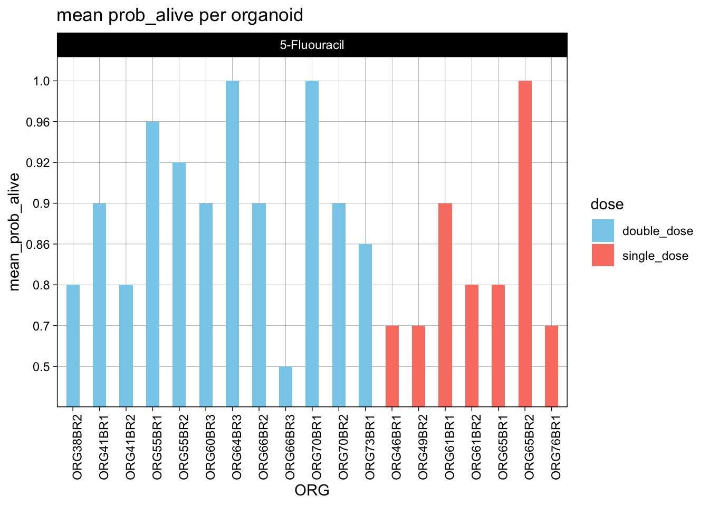
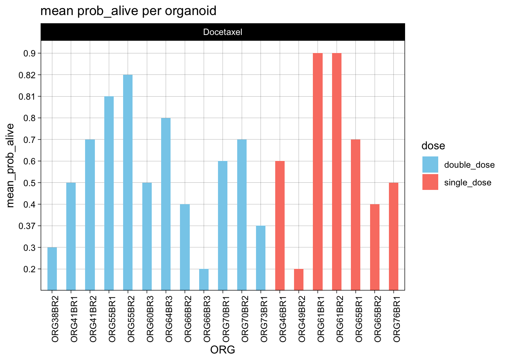
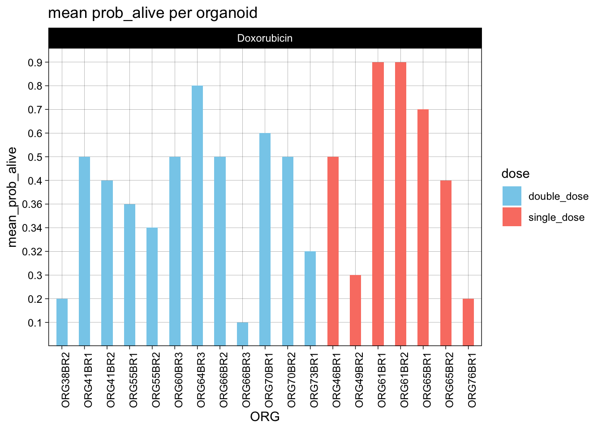
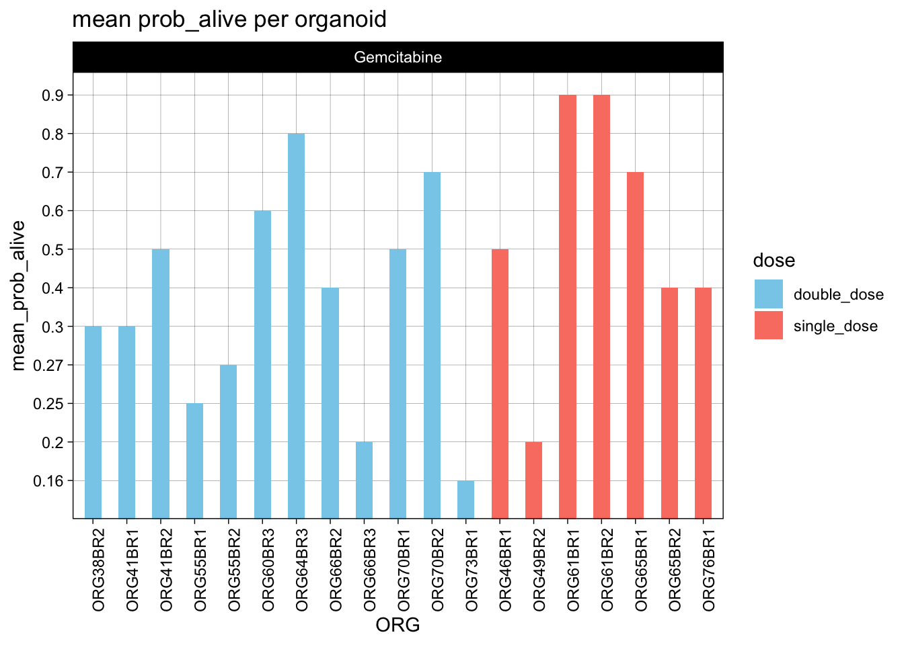
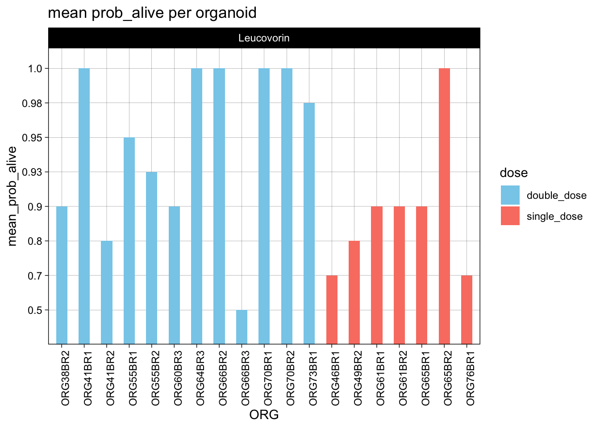
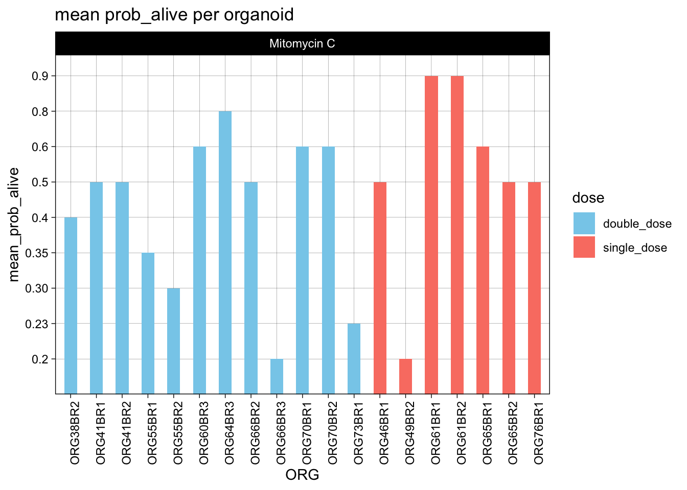
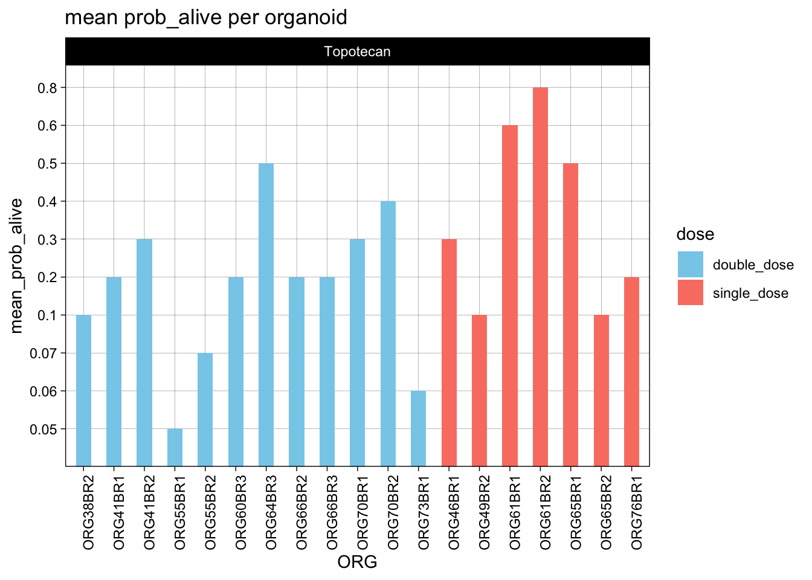

1 VS 2 dose comparison
2025-10-28
Last updated: 2025-12-01
Checks: 5 2
Knit directory:
20241205_OC_ML_image_analyses_single_agents/
This reproducible R Markdown analysis was created with workflowr (version 1.7.1). The Checks tab describes the reproducibility checks that were applied when the results were created. The Past versions tab lists the development history.
The R Markdown file has unstaged changes. To know which version of
the R Markdown file created these results, you’ll want to first commit
it to the Git repo. If you’re still working on the analysis, you can
ignore this warning. When you’re finished, you can run
wflow_publish to commit the R Markdown file and build the
HTML.
Great job! The global environment was empty. Objects defined in the global environment can affect the analysis in your R Markdown file in unknown ways. For reproduciblity it’s best to always run the code in an empty environment.
The command set.seed(20241205) was run prior to running
the code in the R Markdown file. Setting a seed ensures that any results
that rely on randomness, e.g. subsampling or permutations, are
reproducible.
Great job! Recording the operating system, R version, and package versions is critical for reproducibility.
Nice! There were no cached chunks for this analysis, so you can be confident that you successfully produced the results during this run.
Using absolute paths to the files within your workflowr project makes it difficult for you and others to run your code on a different machine. Change the absolute path(s) below to the suggested relative path(s) to make your code more reproducible.
| absolute | relative |
|---|---|
| /Users/dalvinikita/Documents/7_GitHub/20241205_OC_ML_image_analyses_single_agents/output/ORG38BR2/pred_all_data_mean_ORG38BR2.csv | output/ORG38BR2/pred_all_data_mean_ORG38BR2.csv |
| /Users/dalvinikita/Documents/7_GitHub/20241205_OC_ML_image_analyses_single_agents/output/ORG41BR1/pred_all_data_mean_ORG41BR1.csv | output/ORG41BR1/pred_all_data_mean_ORG41BR1.csv |
| /Users/dalvinikita/Documents/7_GitHub/20241205_OC_ML_image_analyses_single_agents/output/ORG41BR2/pred_all_data_mean_ORG41BR2.csv | output/ORG41BR2/pred_all_data_mean_ORG41BR2.csv |
| /Users/dalvinikita/Documents/7_GitHub/20241205_OC_ML_image_analyses_single_agents/output/ORG46BR1/pred_all_data_mean_ORG46BR1.csv | output/ORG46BR1/pred_all_data_mean_ORG46BR1.csv |
| /Users/dalvinikita/Documents/7_GitHub/20241205_OC_ML_image_analyses_single_agents/output/ORG49BR2/pred_all_data_mean_ORG49BR2.csv | output/ORG49BR2/pred_all_data_mean_ORG49BR2.csv |
| /Users/dalvinikita/Documents/7_GitHub/20241205_OC_ML_image_analyses_single_agents/output/ORG55BR1/pred_all_data_mean_ORG55BR1.csv | output/ORG55BR1/pred_all_data_mean_ORG55BR1.csv |
| /Users/dalvinikita/Documents/7_GitHub/20241205_OC_ML_image_analyses_single_agents/output/ORG55BR2/pred_all_data_mean_ORG55BR2.csv | output/ORG55BR2/pred_all_data_mean_ORG55BR2.csv |
| /Users/dalvinikita/Documents/7_GitHub/20241205_OC_ML_image_analyses_single_agents/output/ORG60BR3/pred_all_data_mean_ORG60BR3.csv | output/ORG60BR3/pred_all_data_mean_ORG60BR3.csv |
| /Users/dalvinikita/Documents/7_GitHub/20241205_OC_ML_image_analyses_single_agents/output/ORG61BR1/pred_all_data_mean_ORG61BR1.csv | output/ORG61BR1/pred_all_data_mean_ORG61BR1.csv |
| /Users/dalvinikita/Documents/7_GitHub/20241205_OC_ML_image_analyses_single_agents/output/ORG61BR2/pred_all_data_mean_ORG61BR2.csv | output/ORG61BR2/pred_all_data_mean_ORG61BR2.csv |
| /Users/dalvinikita/Documents/7_GitHub/20241205_OC_ML_image_analyses_single_agents/output/ORG64BR3/pred_all_data_mean_ORG64BR3.csv | output/ORG64BR3/pred_all_data_mean_ORG64BR3.csv |
| /Users/dalvinikita/Documents/7_GitHub/20241205_OC_ML_image_analyses_single_agents/output/ORG65BR1/pred_all_data_mean_ORG65BR1.csv | output/ORG65BR1/pred_all_data_mean_ORG65BR1.csv |
| /Users/dalvinikita/Documents/7_GitHub/20241205_OC_ML_image_analyses_single_agents/output/ORG65BR2/pred_all_data_mean_ORG65BR2.csv | output/ORG65BR2/pred_all_data_mean_ORG65BR2.csv |
| /Users/dalvinikita/Documents/7_GitHub/20241205_OC_ML_image_analyses_single_agents/output/ORG66BR2/pred_all_data_mean_ORG66BR2.csv | output/ORG66BR2/pred_all_data_mean_ORG66BR2.csv |
| /Users/dalvinikita/Documents/7_GitHub/20241205_OC_ML_image_analyses_single_agents/output/ORG66BR3/pred_all_data_mean_ORG66BR3.csv | output/ORG66BR3/pred_all_data_mean_ORG66BR3.csv |
| /Users/dalvinikita/Documents/7_GitHub/20241205_OC_ML_image_analyses_single_agents/output/ORG70BR1/pred_all_data_mean_ORG70BR1.csv | output/ORG70BR1/pred_all_data_mean_ORG70BR1.csv |
| /Users/dalvinikita/Documents/7_GitHub/20241205_OC_ML_image_analyses_single_agents/output/ORG70BR2/pred_all_data_mean_ORG70BR2.csv | output/ORG70BR2/pred_all_data_mean_ORG70BR2.csv |
| /Users/dalvinikita/Documents/7_GitHub/20241205_OC_ML_image_analyses_single_agents/output/ORG73BR1/pred_all_data_mean_ORG73BR1.csv | output/ORG73BR1/pred_all_data_mean_ORG73BR1.csv |
| /Users/dalvinikita/Documents/7_GitHub/20241205_OC_ML_image_analyses_single_agents/output/ORG73BR2/pred_all_data_mean_ORG73.csv | output/ORG73BR2/pred_all_data_mean_ORG73.csv |
| /Users/dalvinikita/Documents/7_GitHub/20241205_OC_ML_image_analyses_single_agents/output/ORG76BR1/pred_all_data_mean_ORG76BR1.csv | output/ORG76BR1/pred_all_data_mean_ORG76BR1.csv |
| /Users/dalvinikita/Documents/7_GitHub/20241205_OC_ML_image_analyses_single_agents/output/mean_average_prob_across_organoids.csv | output/mean_average_prob_across_organoids.csv |
Great! You are using Git for version control. Tracking code development and connecting the code version to the results is critical for reproducibility.
The results in this page were generated with repository version 0f382c0. See the Past versions tab to see a history of the changes made to the R Markdown and HTML files.
Note that you need to be careful to ensure that all relevant files for
the analysis have been committed to Git prior to generating the results
(you can use wflow_publish or
wflow_git_commit). workflowr only checks the R Markdown
file, but you know if there are other scripts or data files that it
depends on. Below is the status of the Git repository when the results
were generated:
Ignored files:
Ignored: .DS_Store
Ignored: .Rhistory
Ignored: .Rproj.user/
Ignored: analysis/.DS_Store
Ignored: analysis/.RData
Ignored: analysis/.Rhistory
Ignored: data/.DS_Store
Ignored: data/images/.DS_Store
Ignored: data/raw_data/
Ignored: output/CYSTIC/
Ignored: output/ORG38BR2/
Ignored: output/ORG41BR1/
Ignored: output/ORG41BR2/
Ignored: output/ORG46BR1/
Ignored: output/ORG49BR2/
Ignored: output/ORG55BR1/
Ignored: output/ORG55BR2/
Ignored: output/ORG60BR3/
Ignored: output/ORG61BR1/
Ignored: output/ORG61BR2/
Ignored: output/ORG64BR3/
Ignored: output/ORG65BR1/
Ignored: output/ORG65BR2/
Ignored: output/ORG66BR2/
Ignored: output/ORG66BR3/
Ignored: output/ORG70BR1/
Ignored: output/ORG70BR2/
Ignored: output/ORG73BR1/
Ignored: output/ORG73BR2/
Ignored: output/ORG76BR1/
Ignored: output/SMALL_MIXED_DENSE/
Unstaged changes:
Modified: analysis/SVM_1_ORG38BR2_Dox.Rmd
Deleted: analysis/SVM_1_ORG38BR2_Dox.knit.md
Modified: analysis/SVM_1_ORG41BR1_Dox.Rmd
Modified: analysis/SVM_1_ORG41BR2.Rmd
Modified: analysis/SVM_1_ORG46BR1.Rmd
Modified: analysis/SVM_1_ORG49BR2.Rmd
Modified: analysis/SVM_1_ORG55BR1.Rmd
Modified: analysis/SVM_1_ORG55BR2.Rmd
Modified: analysis/SVM_1_ORG60BR3.Rmd
Modified: analysis/SVM_1_ORG61BR1.Rmd
Modified: analysis/SVM_1_ORG61BR2.Rmd
Modified: analysis/SVM_1_ORG64BR3.Rmd
Modified: analysis/SVM_1_ORG65BR1.Rmd
Modified: analysis/SVM_1_ORG65BR2.Rmd
Modified: analysis/SVM_1_ORG66BR2_Dox.Rmd
Modified: analysis/SVM_1_ORG66BR3_Dox.Rmd
Modified: analysis/SVM_1_ORG70BR1.Rmd
Modified: analysis/SVM_1_ORG70BR2.Rmd
Modified: analysis/SVM_1_ORG73BR1.Rmd
Modified: analysis/SVM_SMALL_MIXED_DENSE_ORGS.Rmd
Modified: analysis/dose_comparison.Rmd
Modified: code/zscore_heatmaps.R
Note that any generated files, e.g. HTML, png, CSS, etc., are not included in this status report because it is ok for generated content to have uncommitted changes.
These are the previous versions of the repository in which changes were
made to the R Markdown (analysis/dose_comparison.Rmd) and
HTML (docs/dose_comparison.html) files. If you’ve
configured a remote Git repository (see ?wflow_git_remote),
click on the hyperlinks in the table below to view the files as they
were in that past version.
| File | Version | Author | Date | Message |
|---|---|---|---|---|
| Rmd | 0f382c0 | kitadalvi | 2025-11-18 | relative AUCs added |
| html | 0f382c0 | kitadalvi | 2025-11-18 | relative AUCs added |
| Rmd | 6f7dc29 | kitadalvi | 2025-11-10 | dose comparison added |
| html | 6f7dc29 | kitadalvi | 2025-11-10 | dose comparison added |
Warning: package 'ggplot2' was built under R version 4.4.1
Attaching package: 'dplyr'The following objects are masked from 'package:stats':
filter, lagThe following objects are masked from 'package:base':
intersect, setdiff, setequal, union`summarise()` has grouped output by 'Plate_ID'. You can override using the
`.groups` argument.










Relative AUC of pred_probs
Warning in max(auc_df_mean$Concentration): no non-missing arguments to max;
returning -InfWarning in min(structure(logical(0), dim = c(0L, 2L), dimnames = list(NULL, :
no non-missing arguments to min; returning InfWarning in min(x, na.rm = TRUE): no non-missing arguments to min; returning InfORG38BR2
ORG41BR1
ORG41BR2
ORG46BR1
ORG49BR2
ORG55BR1
ORG55BR2
ORG60BR3
ORG61BR1
ORG61BR2
ORG64BR3
ORG65BR1
ORG65BR2
ORG66BR2
ORG66BR3
ORG70BR1
ORG70BR2
ORG73BR1
ORG76BR1
R version 4.4.0 (2024-04-24)
Platform: aarch64-apple-darwin20
Running under: macOS 15.2
Matrix products: default
BLAS: /Library/Frameworks/R.framework/Versions/4.4-arm64/Resources/lib/libRblas.0.dylib
LAPACK: /Library/Frameworks/R.framework/Versions/4.4-arm64/Resources/lib/libRlapack.dylib; LAPACK version 3.12.0
locale:
[1] en_US.UTF-8/en_US.UTF-8/en_US.UTF-8/C/en_US.UTF-8/en_US.UTF-8
time zone: Australia/Melbourne
tzcode source: internal
attached base packages:
[1] stats graphics grDevices utils datasets methods base
other attached packages:
[1] DT_0.33 dplyr_1.1.4 ggplot2_4.0.0
loaded via a namespace (and not attached):
[1] gtable_0.3.6 xfun_0.52 bslib_0.9.0
[4] htmlwidgets_1.6.4 lattice_0.22-7 crosstalk_1.2.1
[7] vctrs_0.6.5 tools_4.4.0 generics_0.1.3
[10] tibble_3.2.1 pkgconfig_2.0.3 Matrix_1.7-3
[13] RColorBrewer_1.1-3 S7_0.2.0 ggridges_0.5.6
[16] lifecycle_1.0.4 compiler_4.4.0 farver_2.1.2
[19] stringr_1.5.1 git2r_0.36.2 httpuv_1.6.15
[22] fontquiver_0.2.1 fontLiberation_0.1.0 htmltools_0.5.8.1
[25] sass_0.4.10 yaml_2.3.10 later_1.4.2
[28] pillar_1.10.2 jquerylib_0.1.4 whisker_0.4.1
[31] tidyr_1.3.1 MASS_7.3-65 cachem_1.1.0
[34] mosaicCore_0.9.5 fontBitstreamVera_0.1.1 tidyselect_1.2.1
[37] digest_0.6.37 stringi_1.8.7 purrr_1.0.4
[40] forcats_1.0.0 geepack_1.3.13 labelled_2.16.0
[43] rprojroot_2.0.4 fastmap_1.2.0 grid_4.4.0
[46] cli_3.6.4 magrittr_2.0.3 dichromat_2.0-0.1
[49] geeM_0.10.1 broom_1.0.8 ggformula_1.0.0
[52] clipr_0.8.0 withr_3.0.2 gdtools_0.4.4
[55] scales_1.4.0 promises_1.3.2 backports_1.5.0
[58] rmarkdown_2.29 workflowr_1.7.1 hms_1.1.3
[61] evaluate_1.0.3 knitr_1.50 haven_2.5.4
[64] rlang_1.1.6 MESS_0.6.0 ggiraph_0.9.2
[67] Rcpp_1.1.0 glue_1.8.0 rstudioapi_0.17.1
[70] jsonlite_2.0.0 R6_2.6.1 systemfonts_1.3.1
[73] fs_1.6.6